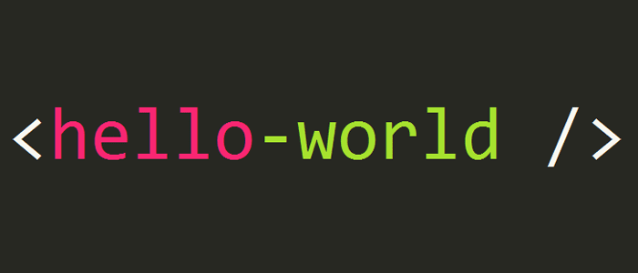
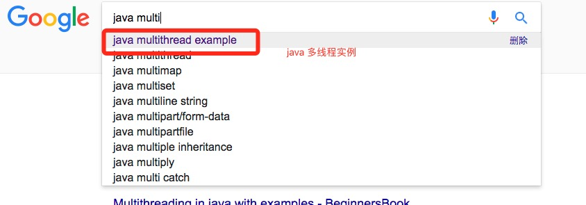

Over the years as a programmer, I have met quite a few friends who want to learn programming. The questions they often ask are how to get started with the XXX language, how to learn a programming language well, and so on. Here I have summarized some confusions of beginners to share with you.

1. How to get started?
On the first day of learning programming, most people will wonder how I should learn and what books do I need to read?
For programmers just getting started, whether you have a computer science background or not, I suggest you first buy a book like "XXX From Beginner to Master" (find one with many good reviews). It is best to also pair it with videos, combining videos with books, from installing the software environment to executing your first "Hello World!".
Some friends may also hear on forums some veterans telling you to buy "Thinking in XXX". That kind of book is very good and is the bible of the XXX language, but I personally think it is not suitable for beginners. Such books are simply a nightmare for beginners and can easily extinguish your enthusiasm for learning.
Of course, a book like "XXX From Beginner to Master" is only suitable for getting started. Once you are past the introductory stage, you can burn it. If you want to become proficient, I still suggest you seriously study "Thinking in XXX".
For the examples in the book, I suggest you type every letter yourself and test and execute them yourself. It may be slow at first, but this is a process you must go through. Never use ctrl+c and ctrl+v.
2. How to solve problems when you encounter them?
When learning a programming language, you will encounter all kinds of strange problems. The ones beginners are most likely to encounter are syntax format errors, for example:
- Forgetting to write the semicolon at the end of a statement, missing a closing parenthesis, missing spaces, and so on.
- Misspelling keywords or variable names, for example writing $runoob as $runob, or String as Strng.
- Writing the two equals signs (==) for equality comparison as one (=), and in some cases you cannot even use two equals signs (==) to determine equality.
- Assignment type mismatch, for example using a string to assign to an integer type.
- Inconsistent indentation (Python).
- ……
The above types of errors are very common among beginners. If it is a syntax error, generally the IDE will have good prompt features, and you can just fix it according to the prompts. But everyone should still be more careful in daily practice and cultivate good programming habits.
Some errors are only shown after execution - a bunch of English prompts where you recognize each individual letter but cannot understand any of them when they are put together. At this point many people are at a loss and do not know what to do. Actually, do not panic, stay calm. These are all paper tigers. As long as you look at them carefully, and if you cannot understand the English, use translation tools such as Google and Baidu Translate, it is very easy to understand the error content.
For example, the following example:
……failed to open stream: No such file or directory in ……
If you can understand it, the meaning is actually very clear - the file was not found. If you cannot understand it, after throwing it into Google Translate it becomes:
......未能打开流：没有这样的文件或目录......
Now you understand, right? Then look at which file included in the code is incorrect, and change it to the correct file name or file path and the problem is solved.
If you still cannot understand it in Chinese, then I am dumbfounded...
To summarize: code carefully and meticulously, pay attention to format, do not be careless, and use a good IDE to help cultivate good programming habits. When you encounter errors, look at them carefully. If you cannot understand them, use a translation tool to translate and then look again.
3. Where should I find people to ask questions and communicate with?
If we have already carefully looked at the error prompts and still do not know how to solve the problem, at this point I suggest you use the following approaches to solve it:
- Search for your problem and needs on search engines (Baidu, Google, Bing, etc.) to see if anyone has encountered the same problem as you.
- Ask questions on technical forums such as: Baidu Knows, CSDN, V2EX, etc. However, I personally do not recommend these because you have to wait for people to answer, the efficiency is too low, and the answer may not be what you want.
- QQ groups: find an active QQ group for the language you are learning and ask questions in the group. If someone answers, great. If no one responds, I suggest checking the activity level of the members and directly sending messages to a few active ones. If they are not too busy, they should help you solve it.
- The best and most direct way is to ask the technical experts around you. One sentence from them might be all it takes to make things clear to you.
We should also frequently bookmark good technical articles, such as: CSDN, Cnblogs, Runoob, Jianshu, InfoQ, 51CTO, Zhihu, etc. Read more about the experiences and cases of seniors, and test them out yourself. These are very helpful for your accumulation.
4. Is English important?
Do you need to be very good at English to learn programming? No, you do not.
Is English ability important? Very important.
Although there are now many Chinese technical documents, blogs, and forums, you can still learn a programming language without knowing English. But you must understand that the official documentation and source code comments of many programming languages are in English, and many cutting-edge technologies are also in English. If you do not read English documents, much of the essence cannot be grasped, and some translations are also inaccurate.
In addition, the most important point is that many error prompts are also in English. If your English ability is good, you can directly understand the prompt content. If you do not understand, you still have to use a translation tool to translate.
For solutions to many problems, the results you get from Baidu might be: heh... But if you can describe the problem in English and throw that description into the Google box (requires a ladder/VPN), 80% of the time the first search result is the answer you need.
So I strongly suggest learning the common English terms used in programming languages. If your English is poor, use translation tools to help you read. Over time, you will come to appreciate the benefits.
For example: debug => debugging, debugger => debugger, abstract => abstract, abstract base class => (ABC) abstract base class, abstract class => abstract class, import => import, include => include, array => array, command line => command line, comment => comment, commit => commit, compatible => compatible, compiler => compiler, component => component, array => array, thread => multithreading, multi-thread => multithreading, etc.

For more, see:Common English Terms in Programming。
5. Summary and sharing
I think summarizing is the hardest part for everyone, just like when you were in school and were asked to write a diary entry every day - basically very few people could stick with it.
But during the process of learning programming, I still suggest everyone summarize the pitfalls you have encountered in daily practice and record your learning process. It is not required to do it every day, but it is best to have a summary and reflection of your past learning every 3-5 days. In particular, you can record specification documents and program scripts, for example:
- XXX language coding standards
- XXX language logic judgment methods
- PHP getting the current URL
- Regular expressions matching email addresses and phone numbers
- Recursive code for tree structures
- Solutions to garbled Chinese characters
- Database connection code encapsulation
- ……
I believe these features will definitely not be written just once or twice in your programming - they will be used very frequently. So everyone can summarize these things and write them in your cloud notes (Youdao Cloud Notes, Evernote).
Lastly, sharing. If you have good problem-solving solutions, or if you think your method is the best in the world, you can share them, including on various blogging platforms.
Here I recommend sharing your study notes on Runoob during your learning process. Runoob has enabled its notes feature (registration required). For the first share, you need to send your notes to the administrator's email (429240967@qq.com).
After passing the review, you will be given an invitation code to register, and from then on you can record your own notes on our platform. The content of the notes must be simple and clear and must not deviate from the content of the corresponding article. Use thea simple description + a piece of simple codeformat. As shown in the figure below: